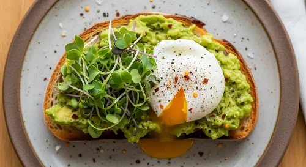

Avocado Toast Epecial da Ana
Ingredientes
- 2 fatias de pão de fermentação natural (Levin).
- 1 abacate maduro.
- 2 ovos frescos.
- Azeite, sal e pimenta calabresa a gosto.
- Sementes de gergelim para finalizar
Modo de Preparo
- Toste as fatias de pão até ficarem douradas e crocantes.
- Em uma tigela, amasse o abacate com um garfo e tempere com sal e limão.
- Prepare os ovos poché em água fervente com um toque de vinagre.
- Espalhe o abacate sobre o pão, coloque o ovo por cima e finalize com temperos.